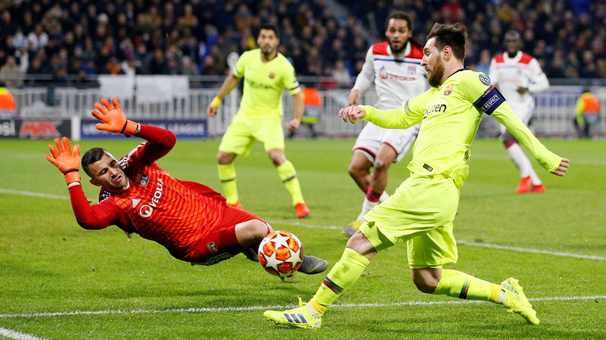

Mundo Futbol
Barcelona
El Fútbol Club Barcelona (en catalán, Futbol Club Barcelona) es una entidad polideportiva de Barcelona, España. Fue fundado como club de fútbol el 29 de noviembre de 1899.8 Es uno de los cuatro clubes profesionales de España junto a Real Madrid, Athletic Club y Osasuna que no es sociedad anónima, de manera que la propiedad del club recae en sus socios.
El F. C. Barcelona es conocido popularmente como Barça (abreviación de la pronunciación de Barcelona en catalán central) y sus hinchas como culés9(pronunciación del catalán «culers»); también, y en referencia a sus colores, se utiliza el término azulgranas, que procede del catalán «blaugranes», tal como aparece en su himno, el «Cant del Barça», el cual en su segunda línea menciona «Som la gent blaugrana» (en castellano, «Somos la gente azulgrana»).

Una de las principales características del F. C. Barcelona es su carácter polideportivo. Se distingue de las demás instituciones deportivas por el hecho de que posee un extenso palmarés a nivel europeo, por el alto nivel de formación de sus jugadores, el potencial económico que maneja, por la calidad de los jugadores y también porque «posee una remarcable cultura del juego y del triunfo».11 Asimismo, los medallistas olímpicos que han representado a la entidad blaugrana han conquistado once oros, veintitrés de platas y veintiocho bronces en las distintas disciplinas deportivas.